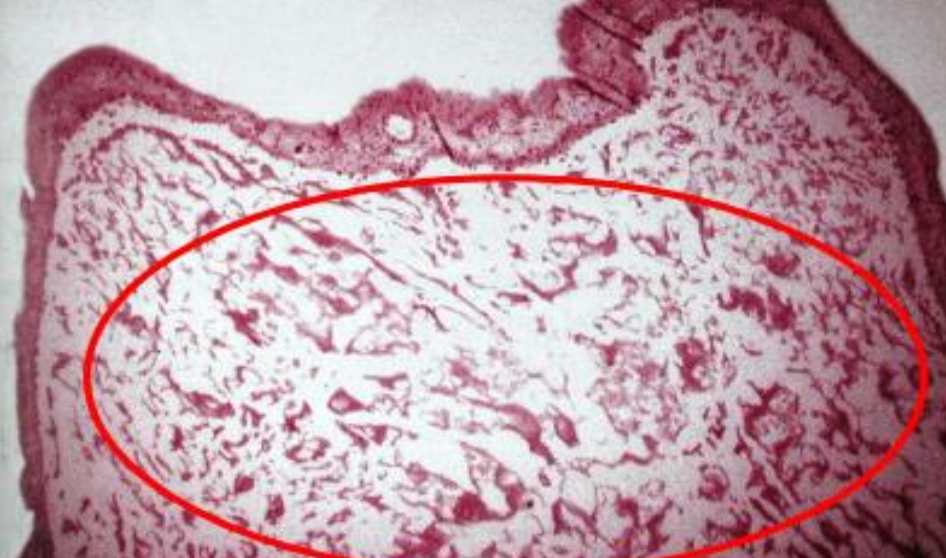
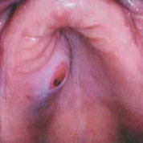

唾液腺疾病
- 通則
- 女性成年人
- Parotid>minor>submandibular>sublingual
- 越少發作的位置越兇多吉少，Parotid 80%良性、sublingual 90%惡性
- Minor salivary gland 的病灶通常在 palate 居多
- 通常發育中心會偏一邊(如果長在中線上的不要猜是唾液腺疾病)
Cyst, 增生, 壞死
| 原因 | 好發 | 年齡 | 特徵 | ||||
|---|---|---|---|---|---|---|---|
| Mucocele/Ranula (口底) | mucous extravasation | Duct 破 | 下唇 | Youth |
 |
||
| mucus retention cyst | Duct 阻塞 | - | 較老 |
 |
|||
| Maxillary sinus lesion | pseudocyst | 創傷、發炎導致膿液堆積在 CT  | - | - |
 |
||
| retention cyst | 黏液腺分泌受阻 | - | - | cystic lesion 充滿黏液、少發炎 | |||
| Post Operative Maxillary Cyst | 相關手術後併發症，granulation tissue 陷入粘膜 | - | 術後長時間 & 30-50y |
|
|||
| Necrotizing sialometaplasia (壞死性涎腺變生) | 缺血 → 局部破壞性發炎: 局部麻醉劑(Dental injection) 、不合的假牙 | 軟硬顎連接處、小唾液腺 | 46y |
|
|||
 |
|||||||
| Adenomatoid hyperplasia罕 | 不明 | - | 40-60y |
|
|||
| Oncocytosis 瘤細胞增多症 |
oncocyte 在唾液腺裡面一區一區的增生 | Parotid g. | 老人 |
 |
|||
Sialadenitis
| 原因 | 好發 | 年齡 | 特徵 | ||||
|---|---|---|---|---|---|---|---|
| Sialadenitis | Mumps | - | - | Youth |
|
||
| Acute Bacterial ~ | S.aureus, S.viridans, S. pneumoniae |
- |
 |
||||
| Chronic | Duct 阻塞 | - | |||||
| Subacute Necrotizing ~ (亞急性壞死性) | - | Palate | Youth |
|
|||
| Cheilitis Glandularis | 太陽? | 下唇 | 老男 |
 |
|||
| Küttner tumor | IgG4-related disease | Submandibular g. | - |
|
|||
| Mikulicz Disease (米庫立茲氏病) | Parotid g. | - | 雙側腮腺、淚腺腫大、席紋樣纖維化(storiform-type fibrosis)、淋巴球浸潤  |
||||
其他
| 原因 | 好發 | 年齡 | 特徵 | ||||
|---|---|---|---|---|---|---|---|
| Sialolithiasis (唾液腺結石症) | 和鈣、磷的代謝無關 | Submandibular gland | - |
 |
|||
| Sialadenosis (Sialosis，唾液腺腫大) | 治療效果不好，除非控制住潛在的系統性疾病 | ||||||
| Sialorrhea (excessive salivation，流涎症) | |||||||
| Xerostomia (dry mouth，口乾症) | - | 舌乳頭萎縮、鵝口瘡(oral candidiasis), 蛀牙  |
|||||
| Sjogren syndrome | 慢性、系統性、自體免疫疾病 | 腮腺 (85%) | 中年 |
|
|||

乾眼症檢測: Schimer test
把試紙放在病人眼下5分鐘，觀測溼透的程度是否低於8mm
| Value(試紙沾濕長度) | Condition |
|---|---|
| >10mm/5min | Normal |
| <5mm/5min | Highly suggestive |
| 0-2mm/5min | Strongly confirm a dry-eye state |
乾口的檢測
- Lashley cups測量腮腺流量是否減少
- 下唇小唾液腺切片，觀測每四個小葉中，是否有兩個以上的小葉有不正常的Lymphocytes infiltrate(4mm2區域超過50個lymphocyte)
Tumor
- Parotid glands: 發生高，體積大，良性多
- Sublingual glands: 一出現，高機率惡性
- 女性較常見，Warthin tumor 例外
- 良性: 40-70y；惡性更年長
- 沒有可靠的標準可以在臨床區分出良性及惡性腫瘤
| 好發位置 | 種類 | age | 特徵 | |||
|---|---|---|---|---|---|---|
| Acinus | Acinic cell CA | - |
|
|||
| Intercalated duct | Pleomorphic adenoma (PA, 多型性腺瘤)良,1st |
30-55y |
  |
|||
| Malignant mixed tumors | Carcinoma ex pleomorphic adenoma  | |||||
| Adenoid cystic CA (AdCC) | - |
|
||||
   |
||||||
| Epithelial myoepithelial CA | ||||||
| Polymorphous (Low-grade)adenocarcinoma (PLGA) | Palate，老人 |
  |
||||
|
||||||
| Monomorphic adenoma良↓ | ||||||
| Canalicular Adenoma良 小管腺瘤 |
上唇(75%)，70y ↑ |
  |
||||
| Basal cell Adenoma良 基底細胞腺瘤 | 中老年人 |
|
||||
membranous type
|
||||||
| Salivary duct carcinoma罕 (唾液腺管癌) |
老人 |
|
||||
| Striated duct | Warthin’s tumor良,2nd | 50-70y |
  |
|||
| Oncocytoma 良,3rd 嗜酸細胞瘤 |
80y |
 |
||||
| Excretory duct | Mucoepidermoid carcinoma1st | 2-70y |
 |
|||
|
||||||
Central type
|
||||||
| Ductal adenocarcinoma | ||||||
| Epidermoid carcinoma | ||||||
| Papilloma | ||||||
整理
- Youth
- mucous extravasation Ranula
- Mumps
- Subacute Necrotizing Sialadenitis
- 年齡平均分部
- Mucoepidermoid carcinoma
- 好發於 Palate
- AdCC
- polymorphous adenocarcinoma
- clear cell carcinoma (80%)
- Necrotizing sialometaplasia (壞死性涎腺變生)
- 好發於上唇
- Canalicular adenoma (75%)
- 男性
- Salivary duct carcinoma
- Warthin’s tumor
- Ductal Papilloma